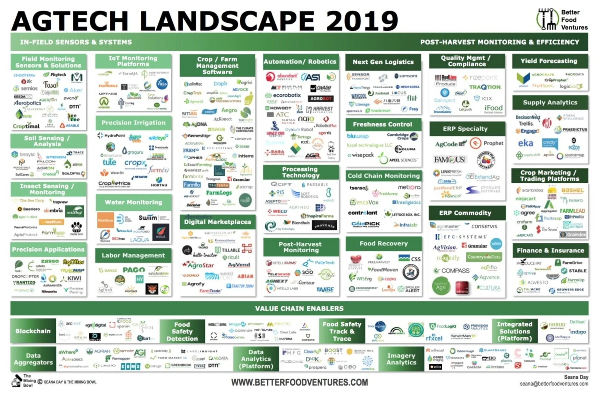
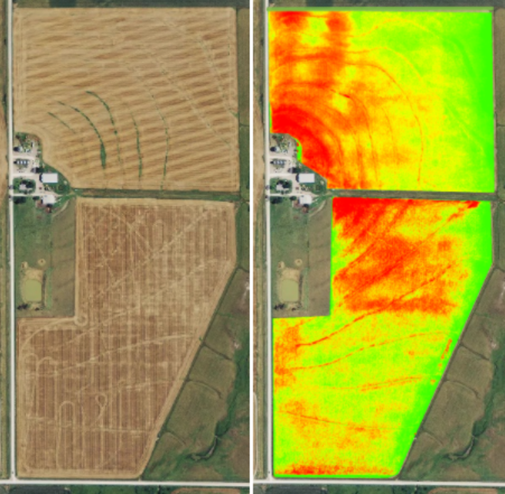

How we feed 8 billion people — and the tools that are changing it.
What is the purpose of agriculture?
Shout it out. There's more than one right answer…
Using technology — sensors, drones, satellites, data, robots, and AI — to grow more food with less land, water, and waste.
Agriculture is one of the oldest things humans do. AgTech is how we keep doing it for 8 billion people.

The 2019 AgTech landscape — every logo is a company building the future of farming. Better Food Ventures
A 2026 cohort of UK startups selected for a US-expansion programme — a snapshot of the range of problems AgTech is working on.
That's roughly 1 of every 10 dollars in the entire world economy. Agriculture is the biggest industry on Earth — and it feeds all 8 billion of us.
Companies shown by annual revenue — value produced each year — to match how agriculture's yearly value is measured. Figures approximate, 2024–25. But revenue is only half the picture.
Market cap = the price tag investors put on a company today — a bet on its future growth. The biggest agriculture company on Earth (Deere) is worth about 3% of Nvidia. Figures approximate, 2026.
A company's market cap is a claim about its future. Tech is valued far above its current revenue because investors expect it to keep growing. Agriculture is valued below its size because they don't expect it to change quickly.
AgTech is the work of closing that gap — applying sensors, data, and automation so the largest industry on Earth can also be one that improves quickly.
Out of everything AgTech does, we'll focus on one question — how healthy is a crop, right now? Answer it well and three of farming's hardest problems get easier:
Yield is simply how much a field produces — the grain, fruit, or nuts you actually harvest. Every farming decision exists to protect it, and healthier plants mean a bigger harvest.
Inside every leaf, photosynthesis combines sunlight, warmth, the carbon in air, and water into sugars — the plant's food. Those sugars become stems, fruit, and grain: yield. (It also releases the oxygen we breathe.)
Photosynthesis can be failing inside a plant long before you'd ever see it. A field holds millions of plants across hundreds of acres — by the time leaves look bad to your eye, it's often too late. So how do we spot stress early, across a whole field?
The only difference between radio waves, the colors you see, and X-rays is the wavelength — how far apart the waves are. "Color" is just your eye's name for a few of those wavelengths.
Each packet is a photon — a tiny bundle of energy. Every photon travels at the same speed: about 300,000 kilometers per second, the fastest anything in the universe can go. Its color tells you its energy — blue photons carry more than red ones.
Every color you've ever seen is squeezed into that one green-outlined band — roughly 400 to 700 nanometers. Everything else is invisible to us, but not to a camera.
Different bands of light reveal different things about the world. For plants, they expose water stress, leaf structure, and photosynthesis — the signals farming needs.
Zoom in for the truth, zoom out for the big picture. In the game you'll switch between all three.
On the ground you clamp a real instrument (the LI-600) onto a single leaf. It measures how the plant is breathing and photosynthesizing right now — its true health.
A drone flies low with special cameras, building a health map so a farmer knows exactly which corner needs water or attention.
Satellites photograph entire countries every few days — spotting drought, disease, and which fields are thriving from hundreds of kilometers up.
In the game you'll switch bands at the drone and satellite scales to see what your eyes can't.

Same field, same moment. Left: what your eye sees — hard to judge. Right: NDVI, where green = thriving and red = struggling.
Catching stress early means farmers grow more food using less water, fuel, and chemicals. The people who build this mix biology, data, drones, and code — and they're hiring.
Walk the rows, fly the drone, and zoom to orbit — each crop hides stressed plants for you to find.